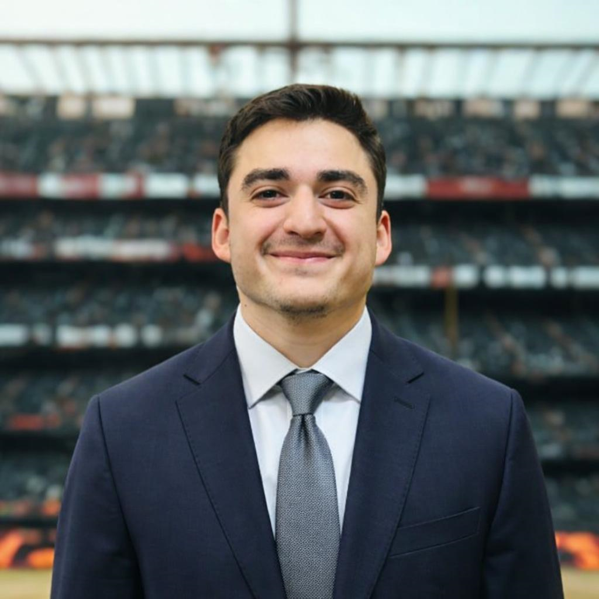

Bernardo Naranjo
Founder & PartnerConsultor estratégico con una trayectoria probada impulsando el crecimiento de instituciones de alto nivel como LDU, el Ministerio del Deporte de Ecuador, Clubes de LaLiga y proyectos de identidad deportiva como AV25 y NMFC. Mi experiencia gestionando proyectos con Ayuntamientos en España y entidades internacionales me permite fusionar la visión técnica con la ejecución comercial. Me especializo en transformar estructuras organizativas en modelos de alto rendimiento, aportando a Unisport EC una capacidad única para escalar proyectos deportivos y consolidar su liderazgo en el sector.